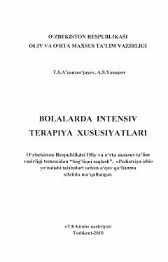

BIBolalarda kritik holatlar va reanimatsiya tadbirlarini o'tkazish bo'yicha o'quv qo'llanma.
Ushbu o'quv qo'llanmada bolalarda uchraydigan kritik va terminal holatlar, ularda olib boriladigan birlamchi reanimatsiya tadbirlari hamda intensiv terapiya xususiyatlari batafsil bayon etilgan. Shuningdek, respirator terapiya, o'tkir yurak-qon tomir yetishmovchiligi va turli xil shok holatlarini davolash usullari yoritilgan. Kitob tibbiyot oliy o'quv yurtlari talabalari va mutaxassislar uchun mo'ljallangan.